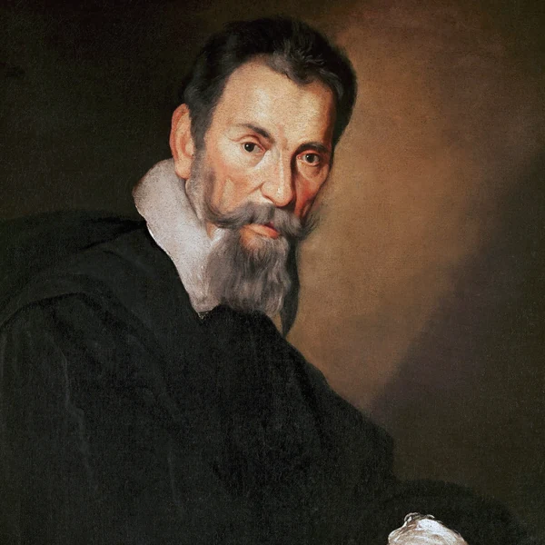
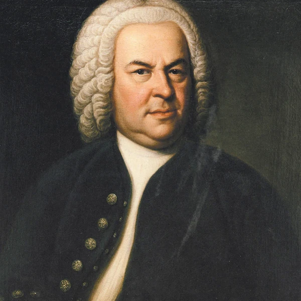
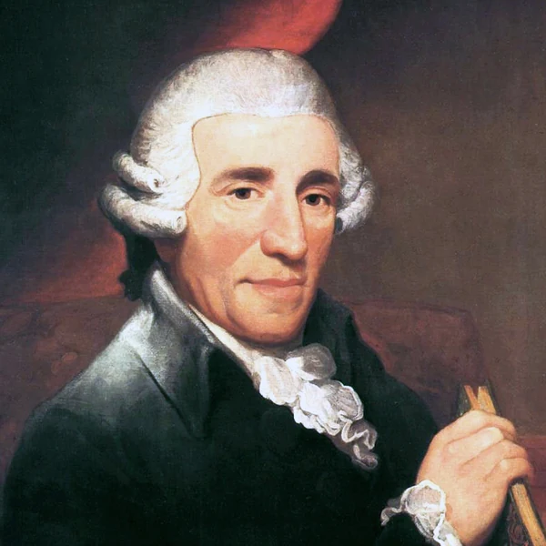
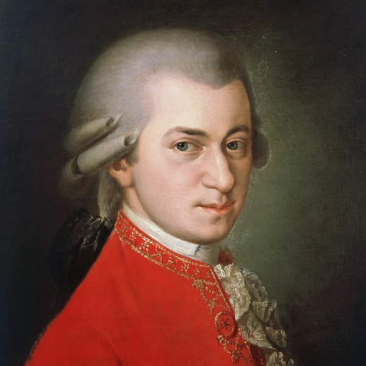
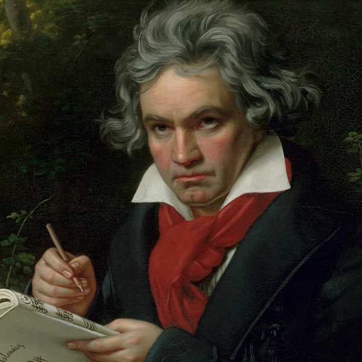
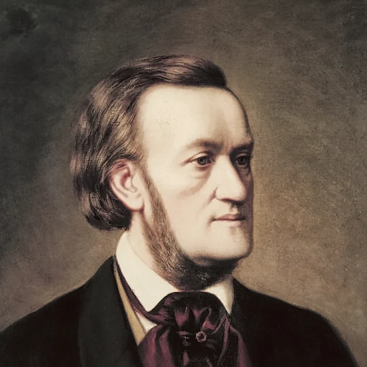
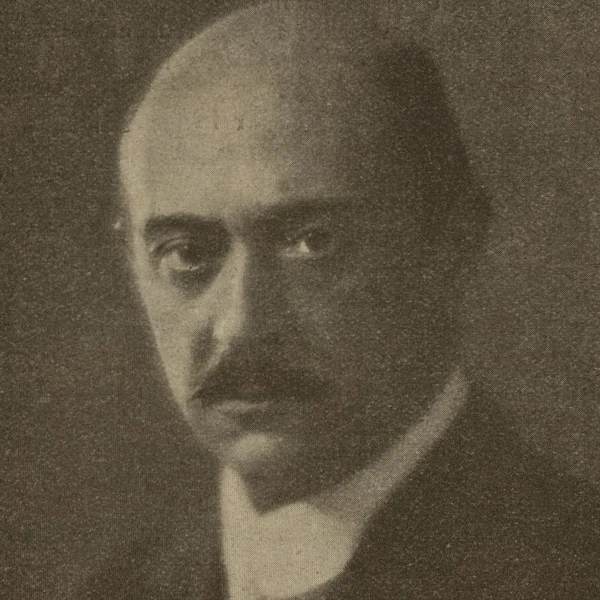
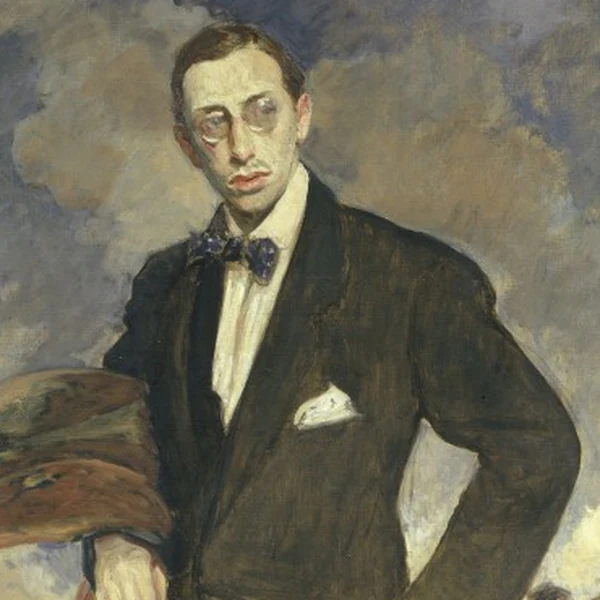

Classical music is the broad name given to a tradition of written composition that developed mainly in Europe and continues to the present day. It covers everything from music for a single performer to works for a full orchestra or choir, so it is not a genre with one recognisable beat or set of instruments. Much of its identity comes from the relationship between a composition and the people performing it. A score sets out the music, but it does not tell a performer exactly how every phrase should feel or how the pieces should fit together in a particular room. Different performances can therefore sound quite different without anybody playing the wrong notes. The tradition also spans centuries of changing musical tastes, from religious settings and court entertainment to public concerts and contemporary experimentation. Calling all of that Classical can be a little misleading, but it is the name that stuck. The important thing is that this is music still being written and interpreted, not simply a collection of old works kept under glass.
The word Classical comes from a long-standing idea of something being a model of quality or an accepted standard. In European arts, it became associated with the supposedly exemplary forms of ancient Greece and Rome. Music historians also use Classical for a much narrower period, roughly from the middle of the 18th century to the early 19th century, when clarity and balance became especially influential in composition. That gives the word two jobs that do not fit together particularly neatly. In everyday conversation, Classical music can mean several centuries of European concert music. In a history book, the Classical period sits between Baroque and Romantic music. Neither usage tells you whether a piece will be gentle, complicated or enjoyable. The name says more about how people have classified the tradition than about what you can expect to hear.
The story of European Classical music stretches back well before the modern concert hall. In the medieval period, religious institutions were important centres for composing and preserving music, and written notation helped performers share works across places and generations. During the Renaissance, composers developed increasingly elaborate ways of combining voices, while music also circulated in courts and private homes. The Baroque era brought major developments in opera and instrumental writing, often supported by churches and wealthy patrons. As public concerts grew, audiences no longer had to belong to a royal court to hear new music, although being able to afford a ticket was another matter. The Classical and Romantic periods brought changing approaches to musical form, expression and the size of performing ensembles. During the 20th century, some composers questioned the very rules of harmony and structure their predecessors had inherited. Others brought in new technologies or influences from outside the established concert tradition. That process has never really stopped, even if concert programmes sometimes give the impression that musical history ended a century ago.
A written score is central to much Classical music, but that does not mean each performance is a mechanical reproduction. The notation establishes pitches and rhythms, while performers make choices about timing, emphasis and the way phrases connect. Some pieces are built from short musical ideas that return in altered forms, allowing a listener to follow how the music changes over time. Others depend more on atmosphere or the interaction of several independent lines. Classical music can involve one performer, a small chamber group or an orchestra, and it includes vocal traditions such as opera and choral music. The instruments and techniques vary enormously between historical periods. A Baroque piece does not follow the same conventions as a modern composition, and there is no single Classical sound that covers both. What they often share is an interest in developing musical ideas over the course of a work, whether that development lasts a few minutes or considerably longer.








Classical music has never been separate from the people and institutions that paid for it. Churches and royal courts once provided much of the support, which meant music could reinforce religious and political authority just as easily as it could offer something new. Public concerts and music education later opened the tradition to a wider audience, but the idea that Classical music belongs to educated or wealthy people has proved remarkably persistent. The accepted concert repertoire was also shaped by who had access to training and professional opportunities. Women and composers from marginalised backgrounds were often left out of the standard histories, even when they were actively making music. Today, performers and institutions are questioning those omissions while community ensembles and educational programmes work to make participation less dependent on money or social connections. There is something slightly absurd about treating music as a universal human achievement while making parts of its history so difficult to enter. The tradition becomes more interesting, not less, when a wider range of people can take part in deciding what belongs in it.